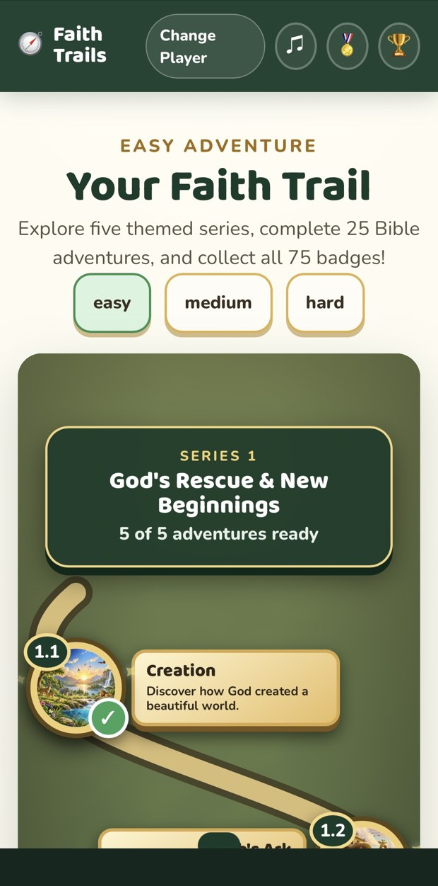
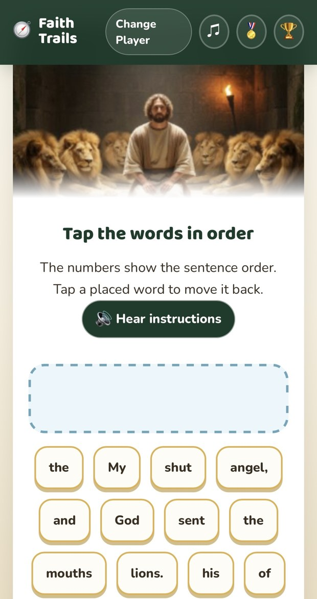
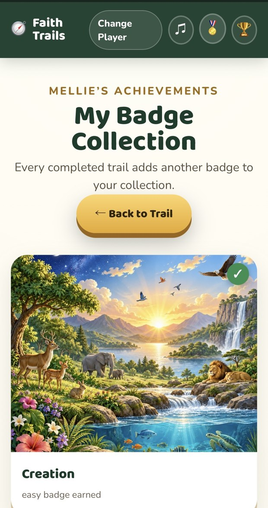
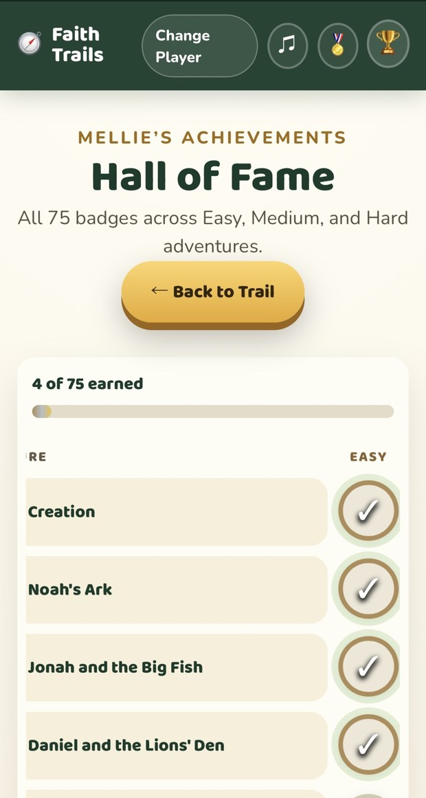

Explore at your own pace
Choose Easy, Medium, or Hard at the start of a quest, and revisit earlier slides as you learn.
A Closer Walk for Kids
Follow a trail through Bible stories, build memory verses, and celebrate every step of the journey.

A welcoming Bible experience from A Closer Walk Ministries, designed to make learning engaging and encourage a closer look at God’s Word.
Choose Easy, Medium, or Hard at the start of a quest, and revisit earlier slides as you learn.
Narration and music bring the Bible stories to life. Audio controls let you choose how to listen.
Read Bible stories and practice memory verses with interactive activities.
Earn badges, enjoy the Golden Trail and Grand Champion celebrations, and create a certificate.
Use a first name or nickname for your player profile and explore Design Your Own Badge.
Unlock the series in order and return to earlier quests to explore them again.
Real screenshots from the app. Select any image for a larger view.





This is a paid app for iPhone and iPad. An App Store download link will be added here when the app is available.
Questions? Visit App SupportFaith-Trails is part of A Closer Walk Ministries’ growing family of Bible-centered apps and resources. Explore another way to learn with Bible Crossword and Is This in the Bible?, or visit our ministry website.